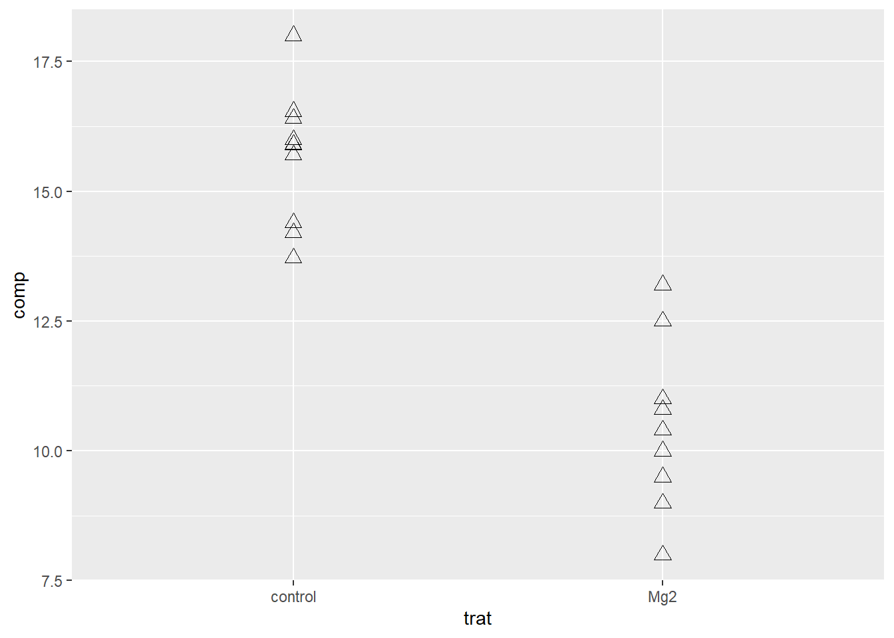
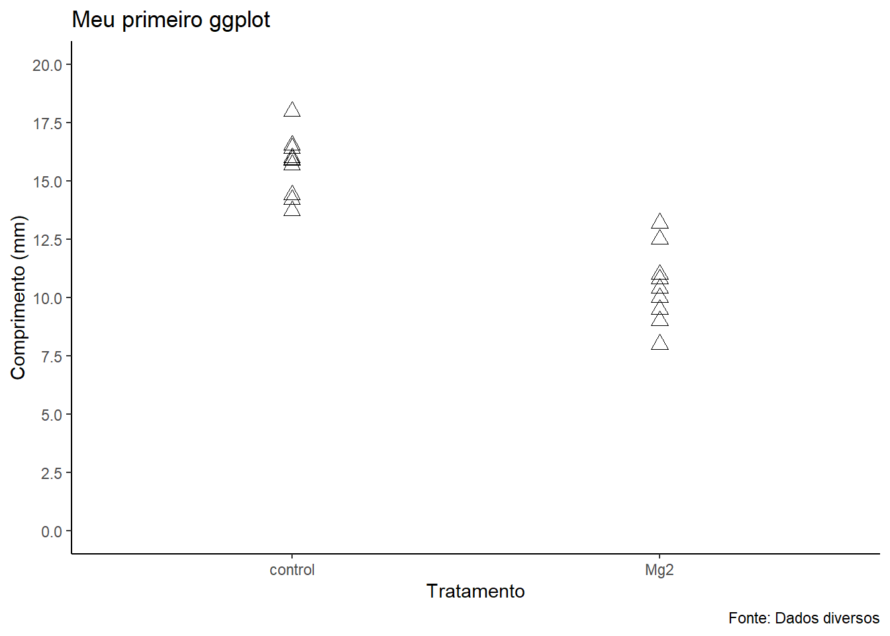

library(tidyverse)
library(gsheet)
dados <- gsheet2tbl("https://docs.google.com/spreadsheets/d/1bq2N19DcZdtax2fQW9OHSGMR0X2__Z9T/edit?gid=983033137#gid=983033137")Análise exploratória 1
Criação de gráficos
Após a importação de um conjunto de dados, uma análise exploratória com montagem de gráficos pode ser feita com o objetivo de analisar e resumir os dados. Para a criação do gráfico, pode ser usada a função ggplot() do pacote tidyverse. Dentro dessa função, é possível ir modificando o gráfico como desejar por meio dos seus argumentos. Usa-se o argumento aes()para especificar qual das variáveis irá compor o eixo X e eixo Y do gráfico. Por exemplo, ao colocar aes(trat,comp) está especificando que a variável trat representará o eixo X e a variável comp representará o eixo Y.
Para continuar adicionando funções dentro de um mesmo pipe, deve-se colocar o sinal +. O tipo de gráfico que será criado dependerá da função geom_, podendo ser um gráfico de pontos se usar geom_point() ou um gráfico boxplot se usar geom_boxplot(). Há também vários outros tipos que podem ser utilizados dependendo da função.
Tipos de gráficos
Gráfico de pontos: Os pontos são usados para representar cada valor da variável resposta em função do eixo X, que pode ser um fator numérico ou categórico. Esse tipo de gráfico pode ser formado pelas funções
geom_point()ougeom_jitter().Gráfico de colunas ou barras: Os gráficos de barras ou colunas são uma forma de representar valores numéricos associados a categorias. Podem ser usados para representar frequências de fatores. A função
geom_col()é usada para criar esse tipo de gráfico.Gráfico de dispersão: Representam uma (ou várias) variáveis numéricas (ditas dependentes) no eixo Y em função de outra no eixo X (dita independente). Esse tipo de gráfico pode ser formado pela função
geom_point().Gráfico boxplot: Os boxplots servem para visualizar a distribuição de valores de uma variável numérica mostrando algumas medidas de estatística descritiva de forma gráfica. O boxplot típico é formado por uma linha central que representa a mediana, uma zona retangular cujo lado superior é dado pelo terceiro quartil e o inferior pelo primeiro quartil e um traço superior e inferior que representam, respectivamente, os valores máximos e mínimos. O boxplot é criado usando a função
geom_boxplot().Histograma: Os histogramas são gráficos bastante simples que permitem caracterizar a distribuição de frequência de valores de uma variável. Nos histogramas, a altura de cada retângulo é proporcional ao número de observações do intervalo de valores na base. O histograma pode ser criado usando a função
geom_histogram().Gráfico de linhas: Muito comum para uma resposta numérica contínua em um fator quantitativo (como dose) ou temporal (de tempo). Para esse gráfico é usado a função
geom_line().Gráfico errorbar: Gráfico de pontos ou de colunas que apresentam uma faixa de variabilidade ou barra de erro. Essa variabilidade por ser desvio padrão, erro padrão ou intervalo de confiança. Pode ser criado usando a função
geom_errorbar()
Conjunto de dados 1
Nesse primeiro conjunto de dados (importado a partir do Google Sheets), está sendo trabalhado uma variável resposta (comprimento de plantas) em função de dois tratamentos diferentes: a aplicação de Mg2 e o controle (sem aplicação de Mg2).
O primeiro passo é a importação dos dados e o carregamento dos pacotes que serão utilizados.
Com esse conjunto de dados, pode-se trabalhar com 2 análises exploratórias diferentes: o gráfico de pontos e o boxplot.
Trabalhando com o gráfico de pontos
Dentro da função geom_point, determina-se a cor dos pontos com o argumento color =, o formato dos pontos com o argumento shape = e o tamanho dos pontos com o argumento size =.
g1 <- dados|>
ggplot(aes(trat, comp))+
geom_point(color = "black", shape = 2, size = 3)
g1
Temas e legendas
Outras adições que podem ser feitas com o gráfico é modificar o seu tema e adicionar títulos e legendas. Existem diversas funções para modificar o tema do gráfico, entre eles o theme_classic() ou então o theme_bw(). Para adicionar algum texto no gráfico, usa-se a função labs(), com isso pode-se adicionar um nome para o eixo X e para o eixo Y e também adicionar um título para o gráfico e uma legenda.
g1 + theme_classic() +
labs(x = "Tratamento",
y = "Comprimento",
title = "Meu primeiro ggplot",
caption = "Fonte: Dados diversos")Trabalhando com boxplot
Além do geom_point() é possível usar também o geom_boxplot() para criar um gráfico boxplot ou o geom_jitter() para criar um gráfico de pontos separados, não agrupados. No geom_boxplot() tem os argumentos outlier.colour = NA para não duplicar o outlier e o fill = para adicionar uma cor ao quadrado do boxplot.
No geom_jitter() pode ser usado os argumentos width = para modificar a largura, color = para mudar a cor, shape = para mudar o formato e size = para mudar o tamanho dos pontos.
As funções ylim() e scale_y_continuous() podem ser usados para definir ou delimitar os valores que aparecem no eixo Y.
g2 <- dados |>
ggplot(aes(trat, comp))+
geom_boxplot(outlier.colour = NA,
fill = "orange")+
geom_jitter(width = 0.05,
color = "black",
shape = 1,
size = 3)
g2 + theme_classic()+
labs(x = "Tratamento",
y = "Comprimento (mm)",
title = "Meu primeiro ggplot",
caption = "Fonte: Dados diversos")+
ylim(0,20) +
scale_y_continuous(limits = c(0,20),
n.breaks = 10)Conjunto de dados 2
O segundo conjunto de dados está em um link na web no formato csv, que foi importado usando a função read_csv().
Para uma breve descrição dos conteúdos do dado, pode ser usado a função glimpse().
cr <- read_csv("https://raw.githubusercontent.com/emdelponte/paper-coffee-rust-Ethiopia/master/data/survey_clean.csv")
glimpse(cr)Rows: 405
Columns: 13
$ farm <dbl> 1, 2, 3, 4, 5, 6, 7, 8, 9, 10, 11, 12, 13, 14, 15, 16,…
$ region <chr> "SNNPR", "SNNPR", "SNNPR", "SNNPR", "SNNPR", "SNNPR", …
$ zone <chr> "Bench Maji", "Bench Maji", "Bench Maji", "Bench Maji"…
$ district <chr> "Debub Bench", "Debub Bench", "Debub Bench", "Debub Be…
$ lon <dbl> 35.44250, 35.44250, 35.42861, 35.42861, 35.42861, 35.3…
$ lat <dbl> 6.904722, 6.904722, 6.904444, 6.904444, 6.904444, 6.90…
$ altitude <dbl> 1100, 1342, 1434, 1100, 1400, 1342, 1432, 1100, 1400, …
$ cultivar <chr> "Local", "Mixture", "Mixture", "Local", "Local", "Mixt…
$ shade <chr> "Sun", "Mid shade", "Mid shade", "Sun", "Sun", "Mid sh…
$ cropping_system <chr> "Plantation", "Plantation", "Plantation", "Plantation"…
$ farm_management <chr> "Unmanaged", "Minimal", "Minimal", "Unmanaged", "Unman…
$ inc <dbl> 86.70805, 51.34354, 43.20000, 76.70805, 47.15808, 51.3…
$ sev2 <dbl> 55.57986, 17.90349, 8.25120, 46.10154, 12.25167, 19.91…Pode-se observar que o trabalho envolve a incidência e severidade da doença da ferrugem do café em 405 fazendas diferentes. A incidência é a presença ou ausência da doença no material que foi amostrado, enquanto que a severidade é a quantidade de doença presente na amostra com incidência positiva.
Esse conjunto de dados envolve 2 principais fatores: a região (SNNPR e Oromia) e a cultivar (Improved, Mixture e Local).
A análise exploratória pode ser trabalhada com as duas variáveis respostas.
Trabalhando com histogramas sobre a incidência
Para visualizar esse conjunto de dados, pode ser feito uma análise exploratória utilizando o histograma. O histograma serve para visualizar uma distribuição contínua apresentado as frequências de determinados resultados. Para criar o histograma, usa-se a função ggplot() juntamente com geom_histogram(). Como o conjunto de dados se refere a 2 regiões diferentes, pode-se realizar um histograma por região usando o facet_wrap(~region), dessa forma as duas regiões ficam separadas.
cr |>
ggplot(aes(x = inc))+
geom_histogram()+
facet_wrap(~region)
Trabalhando com boxplot sobre a incidência
Também pode ser observado os dados através de um gráfico em boxplot. Cria-se esse gráfico com a função geom_boxplot(). O boxplot irá fornecer a variação de dados observados de uma variável numérica por meio de quartis, sendo que a caixa é delimitada pelo primeiro e terceiro quartil e a linha dentro da caixa representa a mediana.
Os valores da mediana e do primeiro e terceiro quartil podem ser encontrados através da função summary().
cr |>
ggplot(aes(y = inc))+
geom_boxplot()summary(cr$inc) Min. 1st Qu. Median Mean 3rd Qu. Max.
9.50 19.43 32.50 34.89 48.20 86.71 Sumário da incidência
Para observar valores como média, desvio padrão e mediana, pode ser usado a função summerise()e os argumentos mean(), sd() e median(). Mas antes disso, será agrupado os dados pela região, separando dessa forma as duas regiões diferentes novamente. Isso pode ser feito com a função group_by().
cr |>
group_by(region) |>
summarise(inc_mean = mean(inc),
sd_mean = sd(inc),
inc_med = median(inc))# A tibble: 2 × 4
region inc_mean sd_mean inc_med
<chr> <dbl> <dbl> <dbl>
1 Oromia 37.0 14.6 39.5
2 SNNPR 33.4 18.9 29.6Posteriormente, também foi feito a sumarização agrupando os dados à nível de cultivar.
cr |>
group_by(cultivar) |>
summarise(inc_mean = mean(inc),
sd_mean = sd(inc),
inc_med = median(inc))# A tibble: 3 × 4
cultivar inc_mean sd_mean inc_med
<chr> <dbl> <dbl> <dbl>
1 Improved 16.4 5.66 15.2
2 Local 53.4 14.3 50.9
3 Mixture 31.9 11.2 31.6Trabalhando com gráfico de dispersão entre incidência e severidade
Também pode ser criado um gráfico de dispersão para mostrar a relação entre incidência e severidade, usando a função geom_point(). O gráfico de dispersão de pontos é um tipo de gráfico que pode ser utilizado quando as variáveis X e Y são contínuas e apresentam relação entre as respostas.
cr |>
ggplot(aes(inc, sev2))+
geom_point()
Por meio desse gráfico, é possível observar que conforme a incidência aumenta, a severidade também aumenta.
Trabalhando com histogramas e sumário de severidade
Do mesmo modo, foi feito um histograma sobre a variável severidade separando as duas regiões.
cr |>
ggplot(aes(x = sev2))+
geom_histogram()+
facet_wrap(~region)
Também foi feito a sumarização da severidade agrupando os dados à nível de cultivar.
cr |>
group_by(cultivar) |>
summarise(sev_mean = mean(sev2),
sev_sd = sd(sev2),
sev_med = median(sev2))# A tibble: 3 × 4
cultivar sev_mean sev_sd sev_med
<chr> <dbl> <dbl> <dbl>
1 Improved 2.16 1.82 1.64
2 Local 18.7 11.1 17.2
3 Mixture 6.47 4.35 5.43Ao criar um histograma sobre a variável severidade agrupando os dados em função da cultivar, pode-se notar que a distribuição da severidade é mais simétrica
cr |>
ggplot(aes(x = sev2))+
geom_histogram()+
facet_wrap(~cultivar)
Trabalhando com histograma sobre severidade por região e cultivar
Para comparar os histogramas de severidade agrupados por região e por cultivar, pode-se colocar o argumento facet_grid(region ~ cultivar). Desse modo, ele irá criar um histograma para cada relação entre os níveis de região e cultivar.
No gráfico abaixo foi utilizado a função scale_fill_colorblind() do pacote ggthemes para adicionar cores ao gráfico.
library(ggthemes)
cr |>
ggplot(aes(x = sev2, fill = region))+
geom_histogram(color = "white")+
facet_grid(region ~ cultivar)+
scale_fill_colorblind()+
theme_minimal(base_size = 14)+
theme(legend.position = "bottom")+
labs(y = "Frequency",
x = "Severity (%)", fill = "Region")Criando subconjuntos com select e filter
A função select() é feita para selecionar colunas, enquanto a função filter() é feita para filtrar linhas. Usando essas funções do pacote dplyr, será criado subconjuntos: o primeiro irá agrupar os dados sobre as fazendas, cultivares e severidade referentes à região de Oromia enquanto que o segundo irá agrupar essas mesmas informações referentes à região de SNNPR.
# Subconjunto Oromia
cr_oromia <- cr |>
select(farm, region, cultivar, sev2) |>
filter(region == "Oromia")
cr_oromia# A tibble: 165 × 4
farm region cultivar sev2
<dbl> <chr> <chr> <dbl>
1 286 Oromia Mixture 7.63
2 287 Oromia Mixture 9.39
3 288 Oromia Mixture 1.30
4 289 Oromia Mixture 9.79
5 290 Oromia Local 18.5
6 291 Oromia Mixture 13.2
7 292 Oromia Mixture 5.60
8 293 Oromia Mixture 1.06
9 294 Oromia Local 17.6
10 295 Oromia Mixture 15.4
# ℹ 155 more rows# Subconjunto SNNPR
cr_pr <- cr |>
select(farm, region, cultivar, sev2) |>
filter(region == "SNNPR")
cr_pr# A tibble: 240 × 4
farm region cultivar sev2
<dbl> <chr> <chr> <dbl>
1 1 SNNPR Local 55.6
2 2 SNNPR Mixture 17.9
3 3 SNNPR Mixture 8.25
4 4 SNNPR Local 46.1
5 5 SNNPR Local 12.3
6 6 SNNPR Mixture 19.9
7 7 SNNPR Mixture 11.9
8 8 SNNPR Local 55.6
9 9 SNNPR Local 11.6
10 10 SNNPR Mixture 11.4
# ℹ 230 more rowsVisualização dos subconjuntos
Tendo criado os subconjuntos, foi feito um gráfico boxplot para a visualização de cada um deles.
p1 <- cr_oromia |>
ggplot(aes(cultivar, sev2, fill = cultivar))+
geom_boxplot()+
coord_flip()+
labs(x = "Cultivar",
y = "Severity (%)")
p1p2 <- cr_pr |>
ggplot(aes(cultivar, sev2, fill = cultivar))+
geom_boxplot()+
coord_flip()+
labs(x = "Cultivar",
y = "Severity (%)")
p2Juntando gráficos com o patchwork
Através do pacote patchwork, é possível juntar dois ou mais gráficos em uma única imagem. Os gráficos podem ficar um do lado do outro
library(patchwork)
p1 + p2Ou também um em cima do outro.
p1 / p2Para que os gráficos compartilhem a mesma legenda e o mesmo nome dos eixos, pode ser usado as funções plot_layout() e plot_annotation().
(p1 / p2) +
plot_layout(guides = "collect",
axes = "collect")+
plot_annotation(tag_levels = 'A')Adicionando as funções theme_few() e scale_fill_few() é possível alterar o tema e as cores do gráfico.
p11 <- cr_oromia |>
ggplot(aes(cultivar, sev2, fill = cultivar))+
geom_boxplot()+
theme_few()+ #Para mudar o formato/estilo do gráfico
scale_fill_few()+ #Para mudar a cor
coord_flip()+
labs(x = "Cultivar",
y = "Severity (%)")
p11p22 <- cr_pr |>
ggplot(aes(cultivar, sev2, fill = cultivar))+
geom_boxplot()+
theme_few()+ #Para mudar o formato/estilo do gráfico
scale_fill_few()+ #Para mudar a cor
coord_flip()+
labs(x = "Cultivar",
y = "Severity (%)")
p22Colocando título e fonte na imagem.
(p11 / p22) +
plot_layout(guides = "collect",
axes = "collect")+
plot_annotation(title = "Coffe rust in Ethiopia",
caption = "Source: Del Ponte (2022)",
tag_levels = 'A')Colocando um gráfico dentro de outro
Usando ainda o pacote patchwork, é possível inserir um gráfico dentro de outro gráfico.
p3 <- cr_oromia |>
ggplot(aes(x = sev2))+
geom_histogram()
p1 + inset_element(p3, left = 0.6, bottom = 0.6, right = 1, top = 1)Salvar imagens
Para salvar o último gráfico rodado no R, pode-se utilizar a função ggsave() especificando o nome com que o arquivo será salvo e a cor de fundo da imagem. A imagem será salva dentro da pasta contendo o RStudio Project.
g1 + theme_classic()+
labs(x = "Tratamento",
y = "Comprimento (mm)",
title = "Meu primeiro ggplot",
caption = "Fonte: Dados diversos")+
scale_y_continuous(limits = c(0,20),
n.breaks = 10)
ggsave("plot1.png", bg = "white")